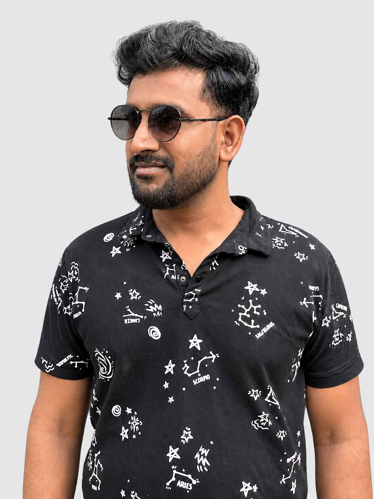
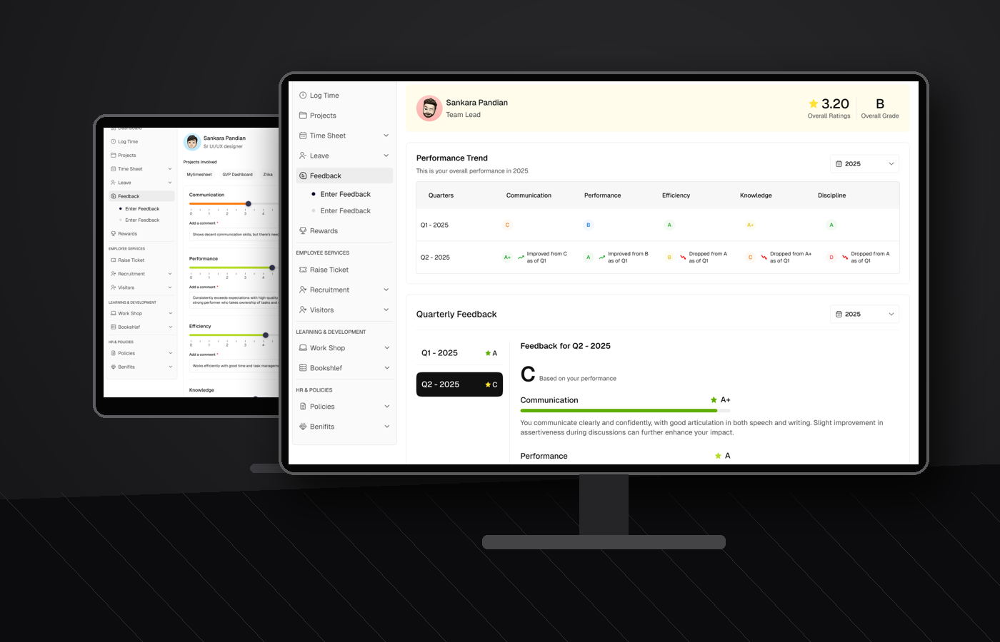
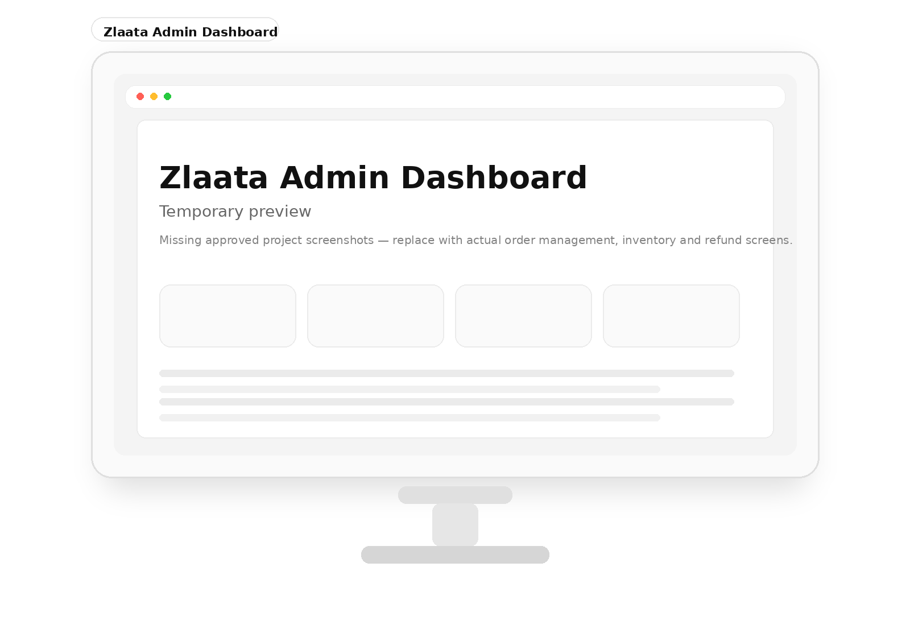
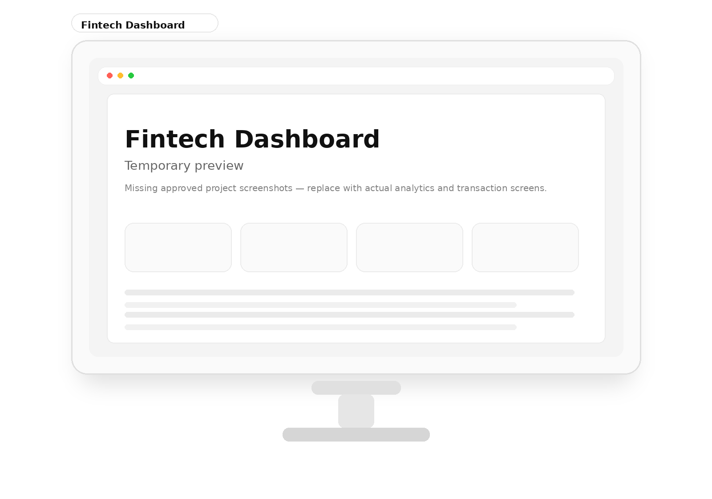
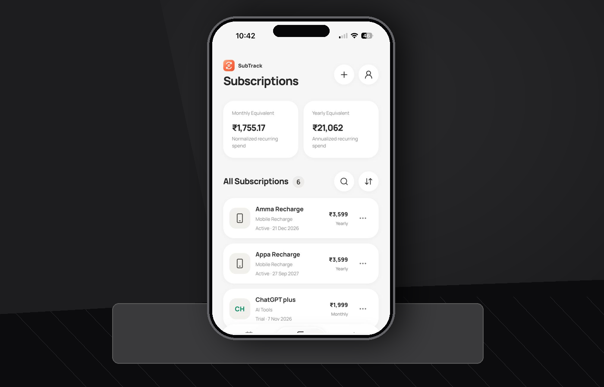
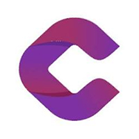
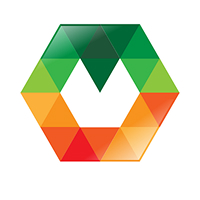

Product design
User flows, information architecture, interaction models, business rules and end-to-end workflows.
ENTERPRISE UX / PRODUCT FLOWS / PROTOTYPINGSENIOR UI/UX DESIGNER · 8 YEARS OF EXPERIENCE
UI/UX DESIGN / PRODUCT DESIGN
I’m a Senior UI/UX Designer with 8 years of experience creating intuitive digital experiences, scalable design systems, and user-centered products across enterprise platforms and consumer applications.
Download Resume
01 / SELECTED WORK
Projects focused on enterprise workflows, product thinking, design systems and practical user experiences.

Redesigned employee feedback and attendance workflows to make HR processes clearer and easier to manage.

Designed operational experiences for multi-item orders, returns, exchanges, refunds and inventory.

Exploring clear financial information hierarchy, transaction visibility and data presentation.

Designed and built a mobile-first subscription manager for recurring payments, renewals and spending insights.
02 / EXPERTISE
My focus is not just the interface. It’s the workflow, decisions, and collaboration behind it.
User flows, information architecture, interaction models, business rules and end-to-end workflows.
ENTERPRISE UX / PRODUCT FLOWS / PROTOTYPINGRequirements analysis, qualitative insights, design validation and feedback-informed iteration.
USER INTERVIEWS / USABILITY TESTING / SYNTHESISReusable components, Figma variables, responsive rules and development-ready interaction specifications.
TOKENS / COMPONENTS / HANDOFFWorking across design, engineering and stakeholders to align requirements and deliver coherent solutions.
WORKSHOPS / DESIGN REVIEWS / DELIVERY03 / ABOUT
I’m a Senior UI/UX Designer with approximately 8 years of experience designing enterprise platforms, dashboards, and digital products.
I focus on turning complex requirements into clear user journeys, usable interactions, and scalable interface systems. My work spans product thinking, UX problem-solving, design systems, and cross-functional collaboration with developers and stakeholders.
04 / EXPERIENCE
Hands-on design across complex modules, evolving products and cross-functional teams.

Codesculpt Innovations

Macappstudio Pvt Ltd
05 / CONTACT
If you’re hiring for a Senior UI/UX Designer or Senior Product Designer role, I’d be glad to connect.